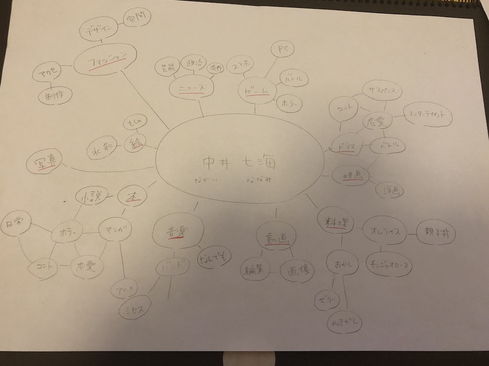

ページが開けない原因がわかるまでここに記述します。
私のマインドマップは多方面の興味が多く、さらにまだ始めたばかりのものは浅いですが昔から興味のあったものに関しては、
興味が多方面のように様々なジャンルを見たり、聞いたりしています。そのため個ジャンルに関してはかなり深いと思います。
協力できることは、興味がとても多いのでやったこともやってないことも基本なんでもできます。
動画や画像の編集は高校の頃に少しだけ携わっていたので簡単にならできます。
今までの多く知ってきたことからの知識や客観した意見を出せると思っています。
